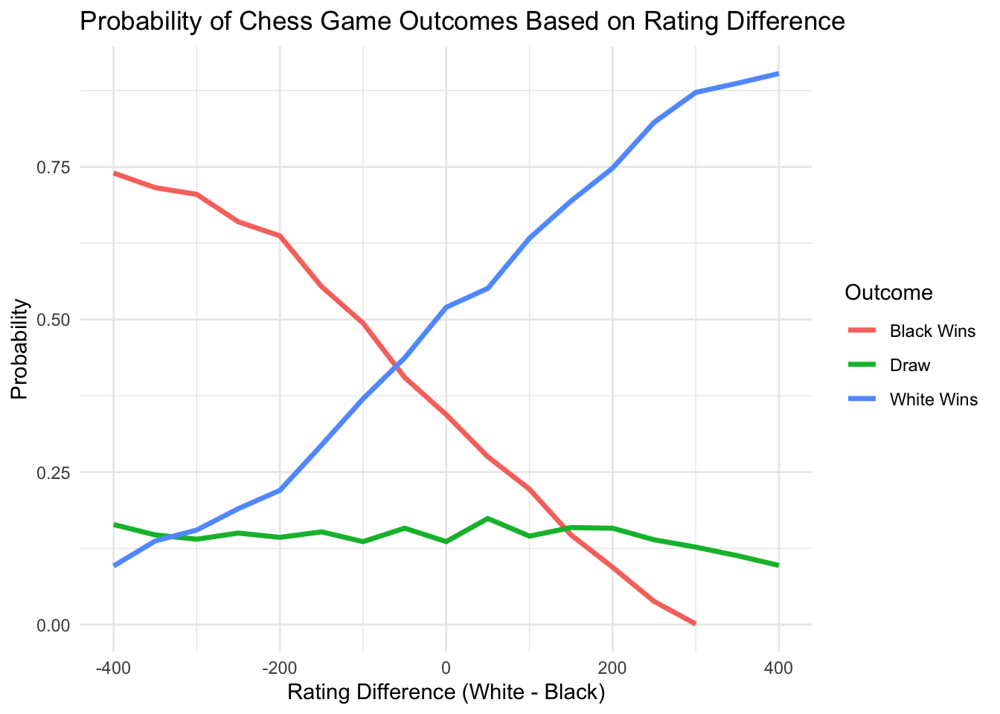
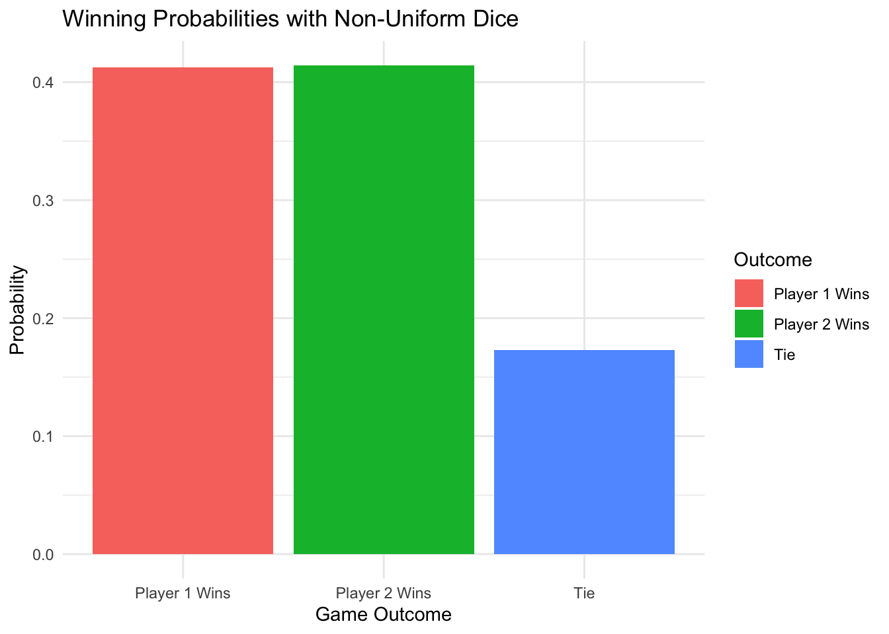

# Load libraries
library(purrr)
library(ggplot2)
library(readr)
suppressPackageStartupMessages(library(dplyr))
# Read data directly from GitHub
chess <- read_csv('https://raw.githubusercontent.com/rfordatascience/tidytuesday/master/data/2024/2024-10-01/chess.csv', show_col_types = FALSE)
# Filter the data for games with both player ratings and results
chess_filtered <- chess %>%
filter(!is.na(white_rating) & !is.na(black_rating) & !is.na(winner)) %>%
mutate(rating_diff = white_rating - black_rating)Iteration Project 3
Project 1: Estimating the Probability of Game Outcomes in Chess Based on Player Ratings
Objective
Simulate chess games between players of varying ratings to estimate the probability of different outcomes (win, lose, or draw) for the player playing White based on their rating difference with the opponent. This task is non-trivial because chess outcomes are strongly influenced by skill ratings, making the probabilities complex to estimate.
Project Steps
Choose a Subset of the Data:
- Use the TidyTuesday Chess Games dataset to filter for games with clear player ratings and outcomes.
Define Simulation Rules:
- Use player ratings to probabilistically determine outcomes. For instance, a player with a higher rating has a higher chance of winning.
Use a Simulation Function:
- Define a function that simulates a game based on a given rating difference.
Run Simulations with
map():- Use
map()to repeat the game simulation for a range of rating differences.
- Use
Create a Plot:
- Visualize the estimated probability of each outcome (win, lose, or draw) for White as the rating difference changes.
Step 1: Load and Filter the Dataset
Step 2: Define the Simulation Function
The function will simulate the outcome of a game based on the rating difference.
simulate_chess_game <- function(rating_diff) {
# Define win probabilities based on rating difference
# Using Elo-based probabilities where larger positive rating_diff favors White
win_prob <- 1 / (1 + 10^(-rating_diff / 400))
draw_prob <- 0.15 # Assuming 15% of games end in a draw
# Randomly determine the outcome
outcome <- runif(1)
if (outcome < win_prob) {
return("White Wins")
} else if (outcome < win_prob + draw_prob) {
return("Draw")
} else {
return("Black Wins")
}
}Step 3: Run Simulations with map()
Now, we’ll simulate multiple games across a range of rating differences to capture the probability distribution.
# Define rating differences to simulate
rating_diffs <- seq(-400, 400, by = 50) # Rating differences from -400 to 400
# Run simulations for each rating difference
set.seed(42)
simulation_results <- map_df(rating_diffs, function(diff) {
outcomes <- map_chr(1:1000, ~ simulate_chess_game(diff))
outcome_summary <- table(outcomes) / 1000
data.frame(
rating_diff = diff,
outcome = names(outcome_summary),
probability = as.numeric(outcome_summary)
)
})Step 4: Plot the Simulation Results
We can now plot the probabilities of each outcome as a function of the rating difference.
# Plot the results
ggplot(simulation_results, aes(x = rating_diff, y = probability, color = outcome)) +
geom_line(linewidth = 1.2) +
labs(
title = "Probability of Chess Game Outcomes Based on Rating Difference",
x = "Rating Difference (White - Black)",
y = "Probability",
color = "Outcome"
) +
theme_minimal()
Step 5: Insights
The plot will show the probabilities of White winning, drawing, or losing as a function of the rating difference. We would expect:
Higher rating differences (favoring White) to lead to a higher probability of White winning.
Close to zero rating difference might yield more draws.
Negative rating differences (favoring Black) should increase Black’s win probability.
Data Source
This analysis uses the Chess Game Dataset (Lichess), sourced from Lichess.org via Kaggle by Mitchell J., and curated by Havisha Khurana for the TidyTuesday project. The dataset contains over 20,000 chess games played on Lichess.org and includes information on player ratings, game outcomes, moves, and other game attributes.
The data can be accessed through the TidyTuesday repository on GitHub: TidyTuesday Chess Dataset (2024-10-01).
Data Dictionary
game_id: Game ID
rated: Rated (T/F)
start_time: Start time
end_time: End time
turns: Number of turns
victory_status: Game status
winner: Winner
time_increment: Time increment
white_id: White player ID
white_rating: White player rating
black_id: Black player ID
black_rating: Black player rating
moves: All Moves in Standard Chess Notation
opening_eco: Opening Eco (Standardized Code for any given opening)
opening_name: Opening Name
opening_ply: Number of moves in the opening phase
Project 2: Estimating the Probability of Winning a Dice Game with Non-Uniform Dice
In this scenario, we’ll estimate the probability of winning a dice game where each player has a different type of loaded die. This is a non-trivial problem because the dice have varying probabilities for each face, making the outcome difficult to calculate analytically.
Project Outline
Objective: Estimate the probability of each player winning when using non-uniform dice.
Details:
Player 1 uses a die where the probability of rolling a 6 is twice that of other faces.
Player 2 uses a die where the probability of rolling a 1 or 2 is lower, and other values are equally likely.
Simulation Steps:
Define a function to simulate one roll for each player with their unique probability distributions.
Use
map()to repeat the simulation multiple times.Visualize the probability distribution of wins.
Plot and Analysis: Create a plot showing the winning probability distribution for each player and interpret the results.
Step 1: Define the Simulation Function
# Load libraries
library(dplyr)
library(purrr)
library(ggplot2)
# Function to simulate one roll for each player
simulate_dice_roll <- function() {
# Define Player 1's die probabilities (higher chance for 6)
player1_probs <- c(1/7, 1/7, 1/7, 1/7, 1/7, 2/7)
player1_roll <- sample(1:6, 1, prob = player1_probs)
# Define Player 2's die probabilities (lower chance for 1 and 2)
player2_probs <- c(1/10, 1/10, 2/10, 2/10, 2/10, 2/10)
player2_roll <- sample(1:6, 1, prob = player2_probs)
# Determine winner
if (player1_roll > player2_roll) {
return("Player 1 Wins")
} else if (player2_roll > player1_roll) {
return("Player 2 Wins")
} else {
return("Tie")
}
}Step 2: Simulate the Game Multiple Times
Now, let’s run the simulation 10,000 times to get reliable probability estimates.
# Run 10,000 simulations
set.seed(42)
results <- map_chr(1:10000, ~ simulate_dice_roll())
# Summarize results
results_summary <- table(results) / 10000
results_summary_df <- as.data.frame(results_summary)
colnames(results_summary_df) <- c("Outcome", "Probability")Step 3: Create the Plot
Plotting the probability distribution of outcomes to visualize who wins more frequently.
# Plot the results
ggplot(results_summary_df, aes(x = Outcome, y = Probability, fill = Outcome)) +
geom_bar(stat = "identity") +
labs(
title = "Winning Probabilities with Non-Uniform Dice",
x = "Game Outcome",
y = "Probability"
) +
theme_minimal()
Step 4: Insight and Analysis
This plot reveals the probability distribution of game outcomes. By simulating the loaded dice game, we can see the advantage held by Player 1 due to their increased probability of rolling a 6, even as Player 2 has a balanced but slightly disadvantaged setup. This analysis highlights how non-uniform probability distributions affect win probabilities in competitive games.